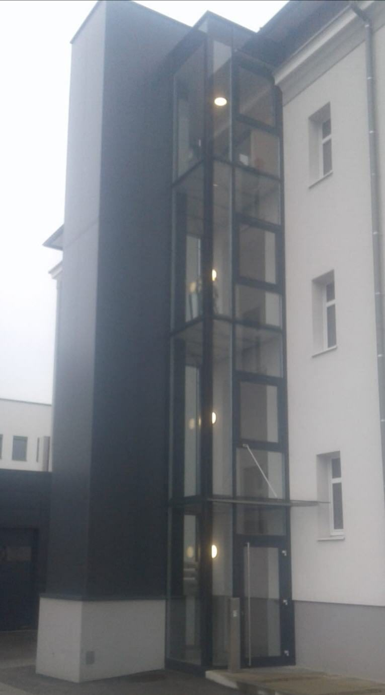

Referenzen
Wer uns beauftragt
Neben Privatkunden zählen öffentliche Einrichtungen, Firmen, Architekten, Planungsbüros und Baufirmen zu unseren Auftraggebern – in der Region und in anderen Teilen Österreichs.
Bau & Wohnbau
Baufirmen und Wohnbaugenossenschaften
- Norikum BauKreuzweg Wels
- GWB-BauLichtenberg
- GWB-BauOffenhausen
- Lawog WohnbauInzersdorf
- Lawog WohnbauPichl bei Wels
- ISG WohnbauEberstalzell
- Betreubares WohnenSattledt
Gewerbe, Handel & Industrie
Firmen und öffentliche Auftraggeber
- Wels StromWels
- Molto LuceWels & Weißkirchen
- Lidl MarktMurau
- Resch & Frisch ZentrallagerWels
- Betten ReiterWels
- Autohaus PeugeotLinz-Leonding
- Autohaus EderWeyregg
- Backstube Bäckerei NöhammerPichl bei Wels
Die Liste zeigt Auftraggeber der bestehenden Website. Gerne nennen wir Ihnen zu einem konkreten Bauvorhaben passende Referenzobjekte.
Für Architektur & Planung
Wir arbeiten nach Plan – und denken mit
Für Architektinnen, Planungsbüros und Baufirmen fertigen wir Geländer, Stiegen, Balkone, Überdachungen und Sonderkonstruktionen nach Ausschreibung oder Werkplan. Wo Details noch offen sind, bringen wir Vorschläge aus der Praxis ein.
- Aufmaß vor Ort statt Maße nach Plan raten
- Detaillösungen für Anschlüsse und Befestigungen
- Ausführung in Alu, Niro und Stahl, kombinierbar mit Holz und Glas
- Terminzusagen, auf die sich die Bauleitung verlassen kann

Ihr Projekt auf dieser Liste?
Ob Einfamilienhaus oder Wohnanlage – erzählen Sie uns, worum es geht.